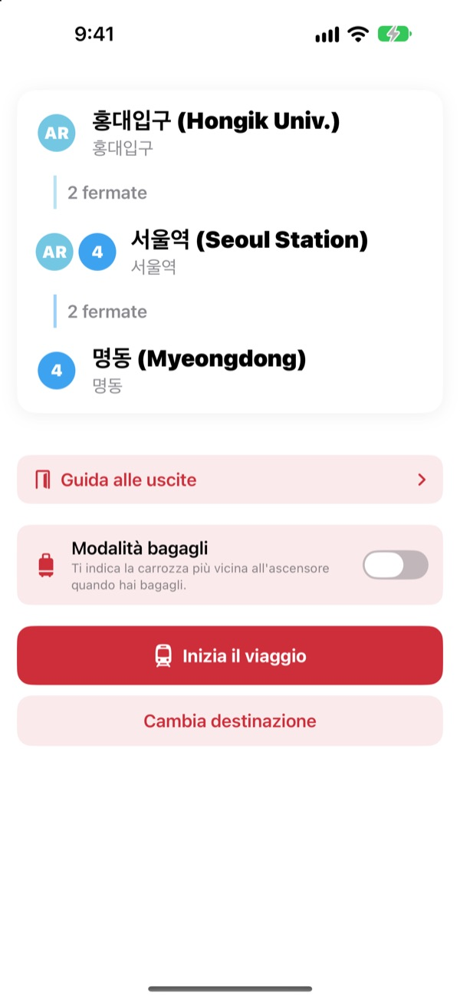
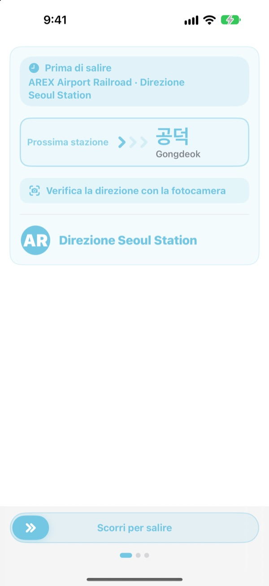
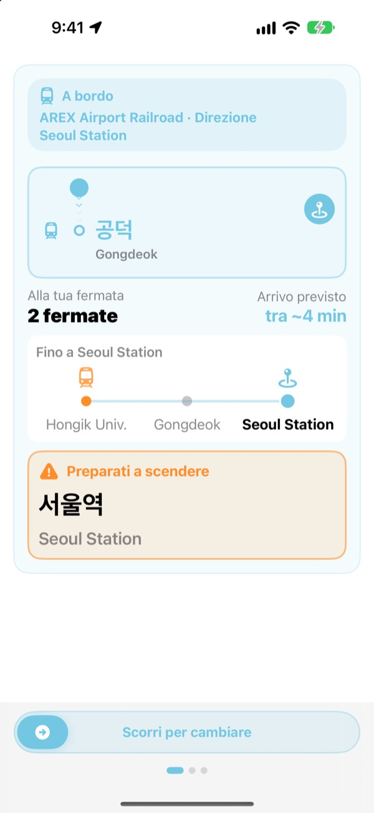
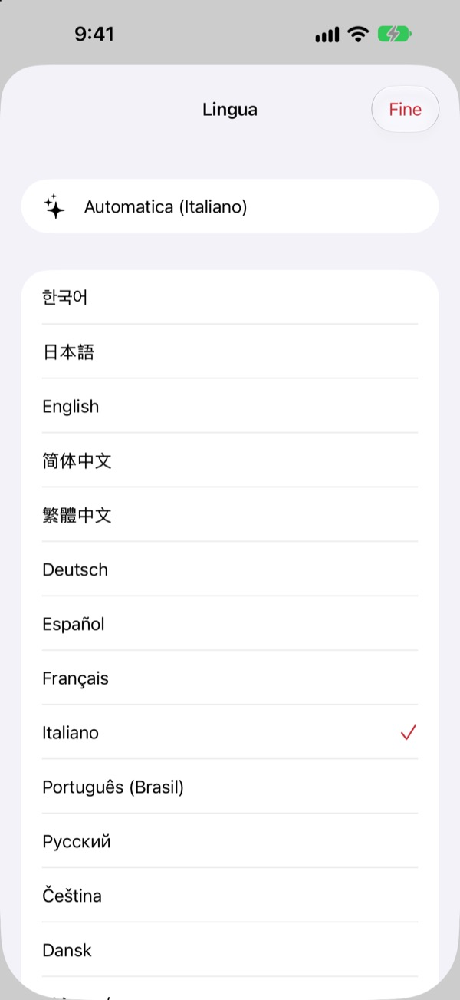

La banchina giusta.
La fermata giusta.
Scegli partenza e arrivo e KORA ti dice quale treno prendere, scritto proprio come sul cartello della banchina. Durante il viaggio segue la tua stazione e ti avvisa quando scendere.
Ricerca del percorso, direzione del treno e arrivi in tempo reale sono gratis.

Fai un viaggio di prova
Sei a Hongik Univ., sulla linea AREX. Scegli dove scendere e tocca Inizia il viaggio per vedere la direzione del treno e gli avvisi di discesa, come nell’app.
Ti è mai capitato di restare sulla banchina senza sapere quale treno prendere?
Le app di mappe ti danno la linea, ma sulla banchina ci sono solo cartelli con nomi di stazioni mai sentiti. Se sali nella direzione sbagliata devi tornare indietro di varie fermate. Se perdi l’annuncio, superi la tua stazione. KORA indica il tuo treno come il cartello e ti avvisa prima della tua fermata.
Con le parole del cartello
Il treno da prendere appare esattamente come la sua destinazione sulla banchina e sul treno. Hai un dubbio? Inquadra con la fotocamera il cartello della banchina o l’indicatore di destinazione del treno e KORA ti dice subito se è la direzione giusta.
Il riconoscimento del testo avviene tutto sul tuo iPhone.

Mai più una fermata persa
KORA combina arrivi in tempo reale, GPS, partenze e soste del treno e gli annunci a bordo per sapere dove sei. Quando la fermata si avvicina ricevi “Preparati a scendere” e poi “Scendi ora!”, con una vibrazione.
Vedi l’avanzamento anche nella schermata di blocco e nella Dynamic Island.

23 lingue, nomi coreani originali
Usa tutta l’app in 23 lingue: parte nella lingua del tuo iPhone. I nomi delle stazioni mostrano l’originale coreano accanto alla grafia latina dei cartelli, così li ritrovi subito sulla banchina.

Si parte in tre passi
- 1
Imposta la partenza
Il GPS trova la stazione più vicina, oppure sceglila tu.
- 2
Scegli l’arrivo
Cambi, fermate e treno da prendere compaiono subito.
- 3
Tocca Inizia il viaggio
Schermo e vibrazione ti dicono quando scendere.
A cosa servono i permessi
- Posizione
- Trovare la stazione più vicina
- Fotocamera
- Leggere cartelli e indicatori di destinazione per controllare la direzione
- Microfono e riconoscimento vocale
- Capire dagli annunci a bordo il nome della stazione e il lato delle porte
- Movimento e fitness
- Rilevare partenze e soste per una stazione attuale più precisa
Tutti i permessi sono facoltativi. Senza, puoi scegliere tu le stazioni e avere comunque percorso e avvisi di discesa. Posizione, fotocamera e annunci vengono elaborati sul dispositivo e mai registrati, salvati o inviati.
Il percorso è sempre gratis. La guida a bordo è KORA Pro.
Gratis
- Ricerca del percorso e cambi
- Il cartello di destinazione del treno da prendere
- Arrivi in tempo reale
- Verifica della direzione con la fotocamera
- Stazione attuale e avviso di discesa sullo schermo
- Tutte le funzioni Pro nei primi tre viaggi
KORA Pro
- In ogni viaggio: guida nella schermata di blocco, riconoscimento degli annunci e vibrazione alla discesa
- Guida alle uscite: cosa c’è a ogni uscita delle linee 1–8 di Seul
- Avviso dell’ultimo treno sulle linee 1–9
- Modalità bagagli: la carrozza più vicina all’ascensore sulle linee 1–8
Paghi una volta e resta tuo. Non è un abbonamento.
Finiti i viaggi gratis puoi comunque viaggiare. L’avanzamento sullo schermo resta; si fermano solo la schermata di blocco, il riconoscimento degli annunci e la vibrazione.
Domande frequenti
L’app non trova la mia stazione o ne mostra un’altra.
Vai in Impostazioni > Privacy e sicurezza > Localizzazione > KORA, scegli “Mentre usi l’app” e attiva “Posizione esatta”. Sottoterra o in grandi edifici il GPS può sbagliare: tocca la scheda della stazione attuale in alto e sceglila tu. Tutto funziona anche senza accesso alla posizione.
Come funziona la verifica con la fotocamera?
Con il percorso a schermo, apri la verifica con la fotocamera e inquadra il cartello della banchina o l’indicatore di destinazione del treno. Funziona meglio con il testo coreano. Se il cartello è buio, lontano o molto inclinato, avvicinati e inquadralo di fronte. Il risultato è un aiuto: nel dubbio guarda anche i cartelli della stazione.
Gli arrivi in tempo reale non compaiono.
I dati arrivano dal Seoul Open Data Plaza, richiedono una connessione e sono disponibili soprattutto sulle linee dell’area metropolitana di Seul. Offline o senza dati in tempo reale, KORA passa automaticamente a una stima basata su orari, GPS e accelerometro e continua a guidarti. La ricerca del percorso funziona anche offline.
L’avviso di discesa arriva un po’ prima o dopo.
Sottoterra il GPS è debole e la stazione attuale può restare indietro. Se consenti il microfono, KORA corregge la posizione con gli annunci a bordo. Gli avvisi sono un aiuto: ascolta anche gli annunci e guarda i cartelli.
Come cambio lingua?
KORA parte nella lingua del tuo iPhone. Tieni premuta una scheda stazione nella schermata principale (stazione attuale o arrivo) per aprire la scelta della lingua tra 23.
L’attività in tempo reale non appare nella schermata di blocco.
Controlla in Impostazioni > App > KORA (su iOS meno recenti, Impostazioni > KORA) che le Attività in tempo reale siano attive. Appare quando avvii la guida del viaggio e termina se chiudi del tutto l’app. La Dynamic Island c’è solo sui modelli di iPhone che ce l’hanno.
Quali città sono incluse?
Circa 930 stazioni nell’area metropolitana di Seul (Seul, Gyeonggi e Incheon, compresi GTX-A, AREX, la linea Shinbundang e le metropolitane leggere), Busan, Daegu, Gwangju e Daejeon. Cambi città con le etichette delle regioni in alto nella scelta della stazione.
Posso provarla prima del viaggio?
Sì. Scegli tu partenza e arrivo e potrai vedere percorsi, cambi e direzione del treno da qualsiasi parte del mondo.
KORA Pro è un abbonamento?
No. È un acquisto unico che resta tuo e funziona con In famiglia. Se reinstalli l’app, tocca Ripristina acquisto nella schermata Pro.
Che fine fanno i miei dati?
Niente account e niente pubblicità. Posizione, fotocamera e riconoscimento degli annunci vengono elaborati sul dispositivo e mai salvati o inviati. Raccogliamo solo statistiche d’uso anonime per migliorare l’app.
L’app è accessibile?
KORA supporta VoiceOver e le dimensioni del testo più grandi. I suggerimenti per renderla più accessibile sono sempre benvenuti.
Manca una stazione, un nome è strano o hai un’altra domanda? Scrivi a mizzking75@gmail.com. Indica versione dell’app, modello di iPhone e stazioni usate: così controlliamo prima.